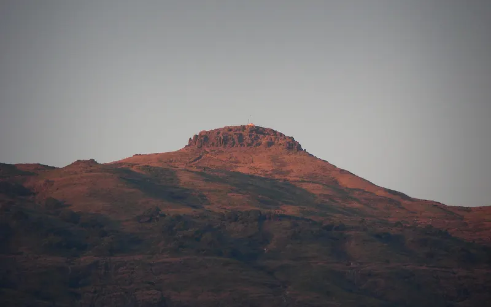
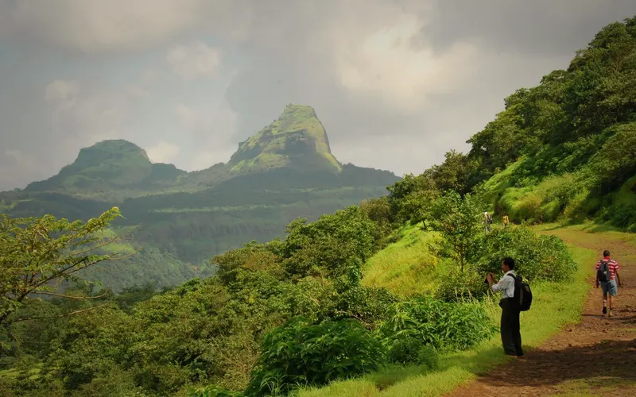
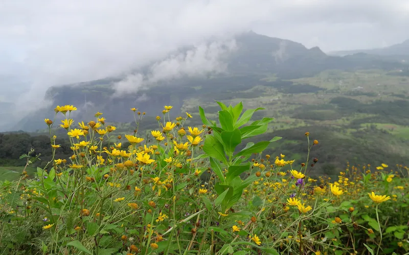
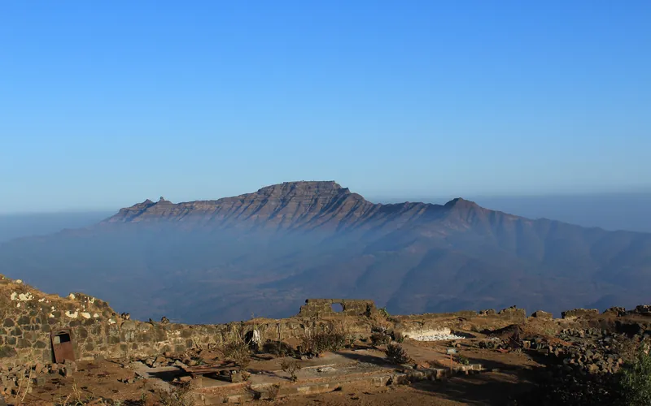
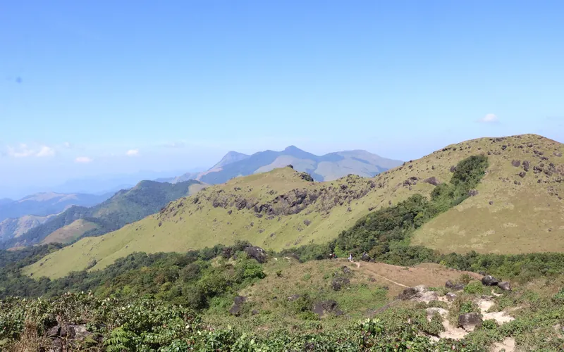
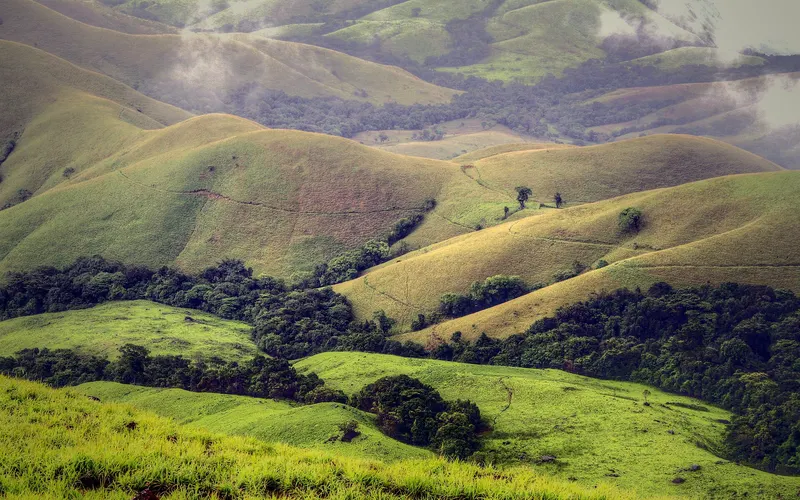
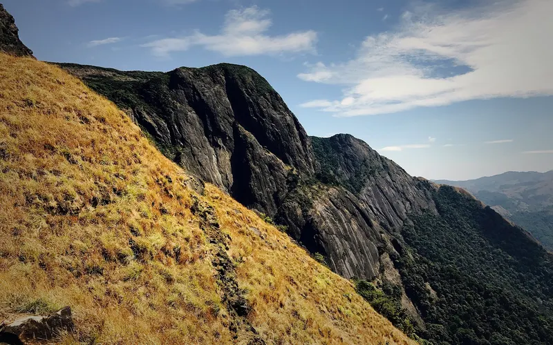
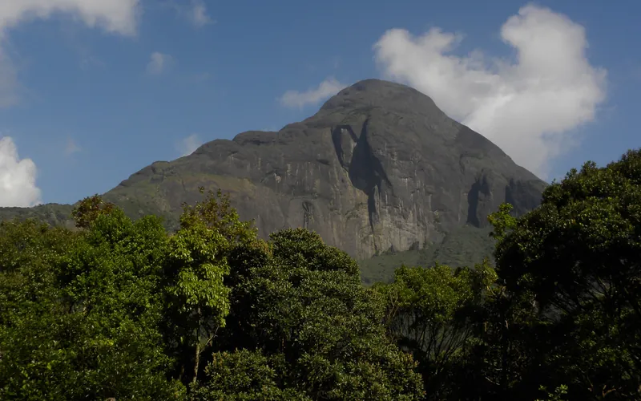
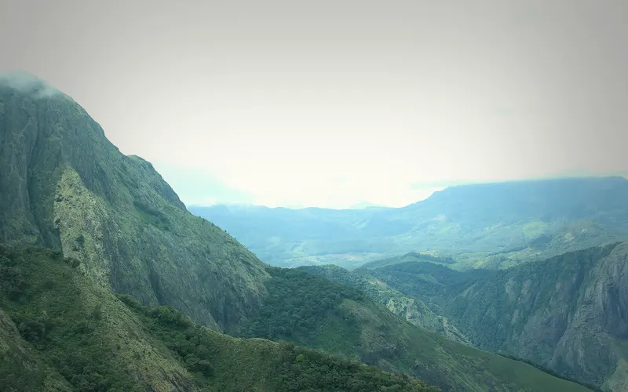

9 treks
the Western Ghats treks whose sources call January one of their best months.
| Trek | Highest point | Days on trail | Difficulty | Best months |
|---|---|---|---|---|
| Kalsubai | 1,646 m | 2 | Easy | Oct–Mar |
| Rajmachi | 826 m | 2 | Easy | Jun–Sep, Nov–Mar |
| Sandhan Valley | Canyon | 3 | Easy | Oct–Mar |
| Rajgad to Torna | 1,403 m | 2 | Easy–moderate | Sep–Feb |
| Tadiandamol | 1,748 m | 3 | Easy–moderate | Sep–Feb |
| Kudremukh | 1,892 m | 3 | Moderate | Jun–Aug, Nov–Feb |
| Kumara Parvatha | 1,712 m | 3 | Moderate–hard | Oct–Feb |
| Agasthyarkoodam | 1,868 m | 3 | Moderate–hard | Jan–Feb |
| Meesapulimala | 2,640 m | 2 | Hard | Sep–Mar |

Easy · 2 daysPhoto: Mvkulkarni23, CC BY-SA 3.0
Kalsubai
▲ 1,646 m · Best Oct–Mar
Easy · 2 daysPhoto: Mukundvg1942, CC BY-SA 4.0
Rajmachi
▲ 826 m · Best Jun–Sep, Nov–Mar
Easy · 3 daysPhoto: Rupaksane, CC BY-SA 4.0
Sandhan Valley
Canyon · Best Oct–Mar
Easy–moderate · 2 daysPhoto: Tokendra, CC BY-SA 4.0
Rajgad to Torna
▲ 1,403 m · Best Sep–Feb
Easy–moderate · 3 daysPhoto: Vinayaraj, CC BY-SA 4.0
Tadiandamol
▲ 1,748 m · Best Sep–Feb
Moderate · 3 daysPhoto: Dhruvaraj S from India, CC BY 2.0
Kudremukh
▲ 1,892 m · Best Jun–Aug, Nov–Feb
Moderate–hard · 3 daysPhoto: Prashanth bhat, CC BY-SA 4.0
Kumara Parvatha
▲ 1,712 m · Best Oct–Feb
Moderate–hard · 3 daysPhoto: Ajay Kuyiloor, CC BY-SA 3.0
Agasthyarkoodam
▲ 1,868 m · Best Jan–Feb
Hard · 2 daysPhoto: Niyas8001, CC BY-SA 4.0
Meesapulimala
▲ 2,640 m · Best Sep–MarQuestions
Which are the treks in the western ghats in january?
The Treqz atlas lists Kalsubai, Rajmachi, Sandhan Valley, Rajgad to Torna, Tadiandamol, Kudremukh and 3 more.
Which is the easiest of the treks in the western ghats in january?
Kalsubai: graded Easy, 2 days on the trail.
Which is the highest of the treks in the western ghats in january?
Meesapulimala, with a highest point of 2,640 m.
Which is the shortest of the treks in the western ghats in january?
Kalsubai: 2 days on the trail.